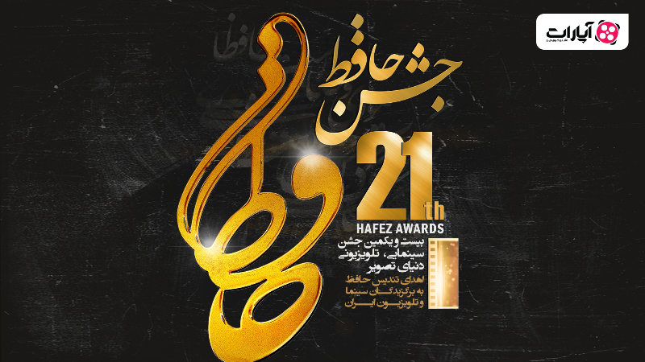
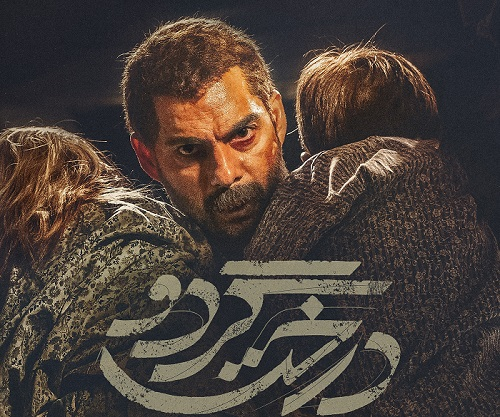

Menu
اسامی برندگان جشن حافظ اعلام شد

جشن حافظ به عنوان یک از رویداد های سالانه سینمایی و تلویزیونی ایران برگزار شد و دیشب برندگان بخش های مختلف آن مشخص شد
:بهترین فیلم
قهرمان به تهیه کنندگی اصغر فرهادی و الکساندر ماله گی
:بهترین کارگردان
اصغر فرهادی برای کارگردانی فیلم قهرمان
:بهترین فیلمنامه
اصغر فرهادی برای نوشتن فیلمنامه فیلم قهرمان
:بهترین بازیگران مرد
امیر جدیدی برای نقش آفرینی در قهرمان و پیمان معادی برای نقش آفرینی در درخت گردو
:بهترین بازیگران زن
سوسن پرور برای نقش آفرینی در بوتاکس و پردیس احمدیه برای نقش آفرینی در تومان
:بهترین موسیقی متن
بامداد افشار برای ساخت موسیقی پوست
:بهترین تدوین
هایده صفی یاری برای تدوین فیلم قهرمان
:بهترین فیلمبرداری
مرتضی نجفی برای فیلمبرداری تومان
:نشان عباس کیارستمی
بهمن و بهرام آرک برای فیلم پوست
:بهترین فیلم مستند
خط قرمز ساخته فرزاد خوش دست

:بهترین سریال